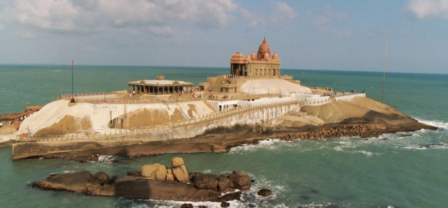

Trip On Dussehra Vacation
Trip On Dussehra Vacation
On the 28-09-2017 we went to Amma dharshan, After Amma darshan at night 11:00 pm we decided to go to trip and we decided to go trip to kanyakumari on the next day with out any planning we started our journey to kanyakumari , It was so thrilling me to got to Kanyakumari and we reached there by 3:00 pm on that day and after meal we went to Vivekananda Rock Memorial in Boat that was very exiting moment After that we went to watch SUN SET and I am very enthusiastic to see Sunset but the clouds were there so that the sun did not appear properly and that night we stayed there in a hotel and we watched sunrise that was really superb! that gave a full satisfaction and then w went to Kanyakumari Mata darshan their we met a man how is selling chains near the beach and that person was very interesting person we really shocked by talking with him He knows many languages (national/international) he speaks Telugu, Hindi, Malayalam, Kanada, Tamil, French, German… He was the very interesting person as he knows reads Newspaper daily and he is sayisng about Andhra news we shocked by listening to his words and decided to read NEWS paper daily but have to wait and see.

The Very next day it was my birthday and also my mother birthday , My friends gave surprise to me and also I was awarked of it and that then we again went to kanyakumari matha darshan and then came to Sucendram that was a temple of god mahashiva and then we went to cutralam falls that was very thrilling moment and then we stayed that night there and the very next day morning we joyed at waterfalls there are many water falls in cutrlam but famous among them was Main falls, Five falls, Tiger falls we all enjoyed there very well .
The following day we went to RP mall in Kochi, That was very big mall and the was 6-stored mall there we can find all kinds of Brands, Food court is also available there and after we went to saloon that is also there in mall and then we took a bus and returned to our Ashram
This was really very exciting trip, As we did not plan any thing before but started our journey unexpectedly, Also sunset and sunrise was awesome, This gave me the best opportunity to talk with that strange people, managing different languages and I am very happy to share all my feelings with you and thanks for reading My blog have a nice day.
Subscribe to Gopa's-Blog
Get the latest posts delivered right to your inbox